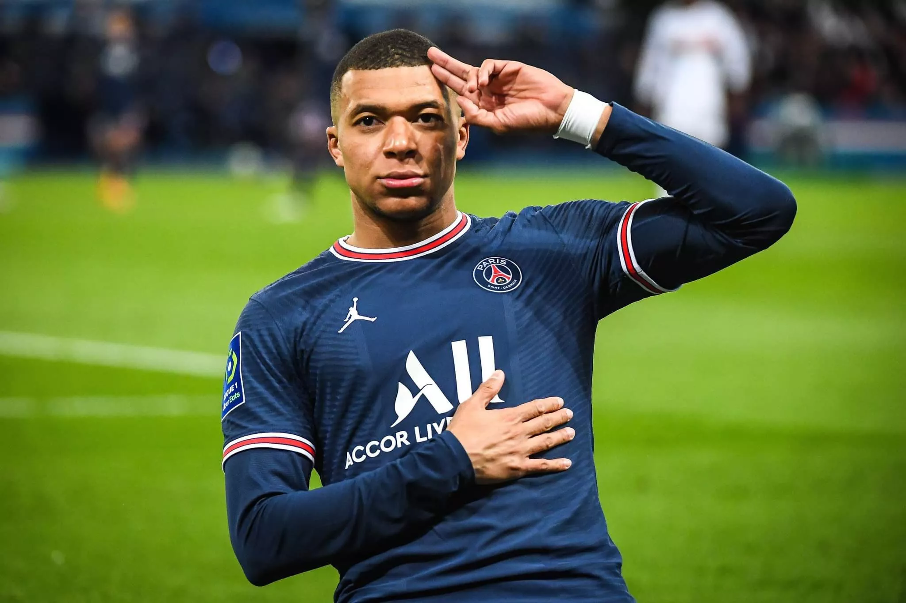
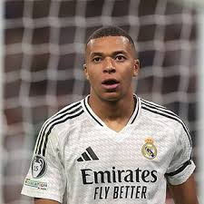
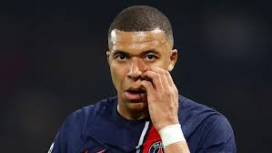

подробно о Мбаппе́



Килиа́н Мбаппе́ Лотте́н (фр. Kylian Mbappé Lottin; французское произношение:
род. 20 декабря 1998[4][5][…], Париж[6]) — французский футболист,
нападающий клуба «Реал Мадрид» и капитан сборной Франции.
Признаётся одним из лучших игроков мира[9][10].
Чемпион мира и лучший молодой игрок чемпионата мира 2018[11].
На чемпионате мира 2022 года стал лучшим бомбардиром (8 голов).
Начал заниматься футболом в полупрофессиональном клубе «Бонди»,
выступающем в низших лигах Франции. Был замечен скаутами «Монако»,
к которому присоединился в 2015 году и в том же году в 16 лет дебютировал
составе «монегасков». Самый молодой дебютант и автор забитого гола в
истории клуба. В сезоне 2016/17 закрепился в основном составе и начал
регулярно отличаться забитыми мячами, что позволило «Монако» впервые
за 17 лет выиграть чемпионат Франции. Летом 2017 года был арендован
«Пари Сен-Жерменом» с условием обязательного выкупа за 180 миллионов
евро через сезон, что сделало Мбаппе самым дорогим игроком младше
20 лет и вторым самым дорогим игроком в мире[12]. В дебютном сезоне
в парижском клубе выиграл все три внутренних соревнования — чемпионат
Кубок и Кубок лиги. В 2018 году по версии аналитической компании C
IES Football Observatory[англ.] признан самым дорогим игроком в мире,
его трансферная стоимость была оценена в 216,5 миллиона евро[13].